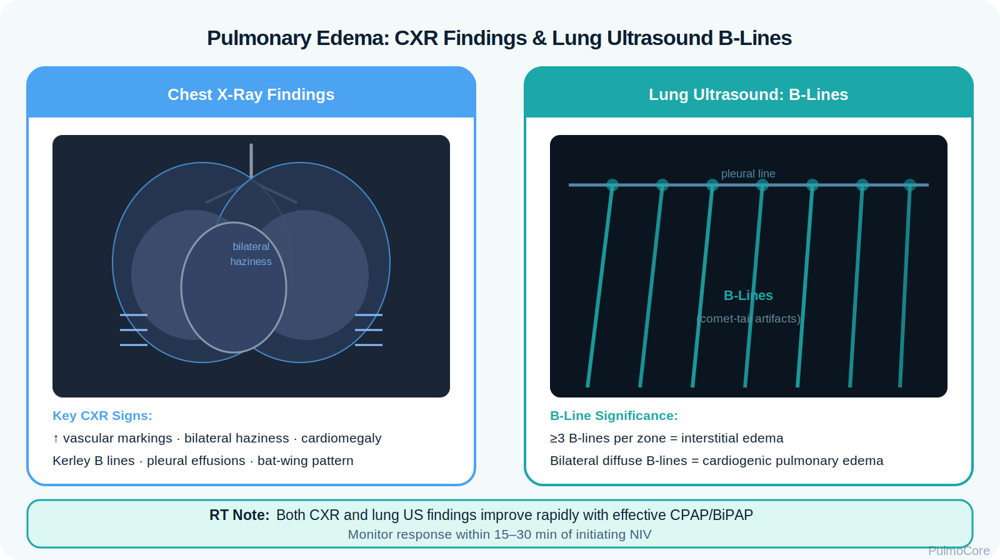
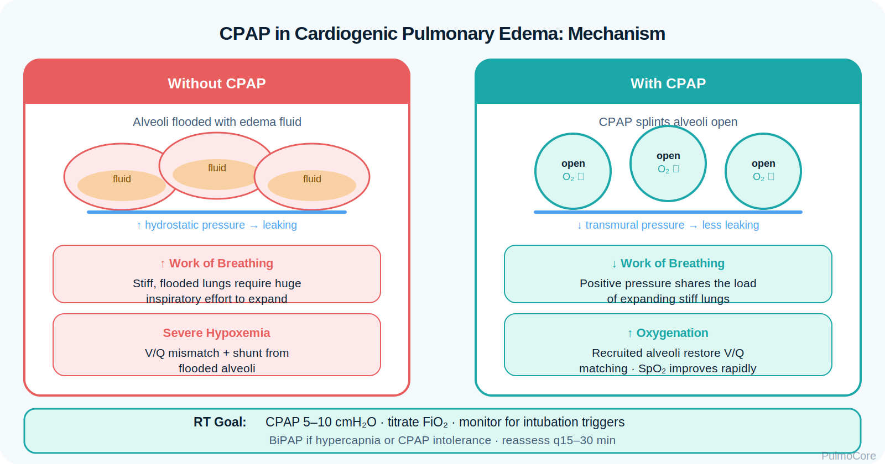

Cardiogenic pulmonary edema is acute or progressive fluid accumulation in the alveoli and interstitium caused by elevated left-sided heart pressures. This module focuses on RT-level recognition, oxygenation support, diagnostic interpretation, NIV decision-making, medication support, and escalation during impending respiratory failure.
Category Cardiopulmonary / Oxygenation Disorder
Estimated Time 30–40 minutes
Level Core RT + Board Prep Knowledge
Learning Objectives
By the end of this cardiogenic pulmonary edema module, learners should be able to connect left-sided heart dysfunction, elevated pulmonary venous pressure, alveolar flooding, impaired gas exchange, diagnostic data, treatment decisions, and escalation priorities.
1. Explain pathophysiology Describe how elevated left atrial/pulmonary venous pressure causes interstitial and alveolar edema.
2. Differentiate cardiogenic vs noncardiogenic edema Compare hydrostatic pulmonary edema with inflammatory permeability edema using history, imaging, BNP, echo, and response to therapy.
3. Interpret assessment data Use symptoms, breath sounds, SpO₂, ABGs, CXR, BNP, ECG, hemodynamics, and response to oxygen/NIV/diuresis to determine severity.
4. Escalate appropriately Recognize red flags such as severe hypoxemia, pink frothy sputum, altered mental status, hypotension, rising PaCO₂, and poor response to noninvasive support.
Video Overview
2-Minute Cardiogenic Pulmonary Edema Overview
Watch this quick overview before moving into the disease snapshot.
Disease Snapshot
Cardiogenic pulmonary edema is a gas-exchange emergency caused by increased hydrostatic pressure backing up from the left heart into the pulmonary circulation. Fluid first collects in the interstitium, then floods alveoli, creating shunt-like physiology, low lung compliance, increased work of breathing, and hypoxemia.
What it is: Hydrostatic pulmonary edema caused by left-sided cardiac dysfunction or fluid overload.
Primary problem: Alveoli and interstitium fill with fluid, impairing oxygen diffusion and ventilation.
Classic symptoms: Acute dyspnea, orthopnea, crackles, anxiety, diaphoresis, cough, and possible pink frothy sputum.
Key diagnostic clue: CXR vascular congestion/B-lines, elevated BNP, cardiac history, echo findings, and rapid response to preload/afterload support.
Acute danger: Severe hypoxemia, exhaustion, altered mental status, hypotension, arrhythmia, or rising PaCO₂.
RT priority: Assess oxygenation, ventilation, work of breathing, lung sounds, NIV tolerance, ABG trends, and response to therapy.
RT Clinical Connection
For RTs, cardiogenic pulmonary edema is not simply “wet lungs.” It is a rapidly changing oxygenation and work-of-breathing problem. The RT must decide whether the patient needs supplemental oxygen, CPAP/BiPAP, intubation preparation, or urgent escalation for shock or ventilatory failure.
Board Prep Frame
Immediately associate cardiogenic pulmonary edema with left-sided heart failure, increased hydrostatic pressure, crackles, hypoxemia, CXR congestion, elevated BNP, CPAP/BiPAP support, nitrates/diuretics when ordered, and intubation if NIV fails or mental status declines.
Quick Pre-Check
Start with the core pulmonary edema pattern
Which statement best describes the core gas-exchange problem in cardiogenic pulmonary edema?
Anatomy & Pathophysiology
Cardiogenic pulmonary edema begins when the left ventricle cannot effectively handle preload or forward flow. Pressure backs up into the left atrium and pulmonary veins, raising capillary hydrostatic pressure until fluid leaks into the interstitium and alveoli.
Pressure backs up from the left heart into pulmonary veins/capillaries.
Pushes fluid from capillaries into lung tissue.
Interstitial Fluid
Fluid collects around bronchi and vessels before alveoli flood.
Creates dyspnea, decreased compliance, and early crackles/B-lines.
Alveolar flooding
Fluid enters gas-exchange units and dilutes surfactant.
Creates shunt-like hypoxemia and frothy secretions.
Low lung compliance
Fluid-filled lungs become stiff and harder to expand.
Increases work of breathing and NIV/intubation risk.
V/Q mismatch and shunt
Perfused alveoli are fluid-filled and poorly ventilated.
Causes hypoxemia that may respond poorly to low-flow oxygen alone.
ABG Progression Concept
Early pulmonary edema often shows hypoxemia with respiratory alkalosis from tachypnea. If fatigue develops, PaCO₂ may normalize or rise. Rising PaCO₂ with distress, drowsiness, or exhaustion suggests ventilatory failure and need for urgent escalation.
Danger Sign
A patient who remains severely hypoxemic, becomes drowsy, or can no longer tolerate NIV is not stable. Worsening mentation can mean hypoxemia, hypercapnia, shock, or fatigue.
Click the Pulmonary Edema Hotspots
Click each hotspot to reveal how that structure contributes to cardiogenic pulmonary edema.
Start here: Click all four hotspots to complete this activity.
0 / 4 hotspots reviewed
Etiology & Risk Factors
Cardiogenic pulmonary edema occurs when cardiac function, fluid balance, or vascular pressure overwhelms the pulmonary circulation. Common drivers include acute decompensated heart failure, myocardial ischemia or infarction, hypertensive emergency, arrhythmias, valvular disease, renal failure, and excessive fluid administration.
Cause or Risk Factor
Why It Matters
RT / Clinical Focus
Acute left ventricular failure
Raises left atrial and pulmonary venous pressure.
Watch for acute hypoxemia, crackles, and need for positive pressure.
Myocardial ischemia/infarction
Can abruptly reduce pump function and trigger pulmonary edema.
Escalate for ECG/troponin evaluation while supporting oxygenation.
Acute MI
Severe afterload can precipitate flash pulmonary edema.
NIV and ordered vasodilators may rapidly reduce WOB.
Arrhythmias
Rapid rhythms can reduce filling/forward flow.
Monitor perfusion, BP, and response to cardiopulmonary treatment.
Track I/O, edema, dialysis history, and diuretic response.
Valvular disease
Mitral/aortic disease can elevate left-sided pressures.
Report new murmurs, hypotension, or recurrent edema episodes.
Sort the Pulmonary Edema Factors
Choose the best category for each item, then check your answers.
Pink frothy sputum
CPAP/BiPAP support
Acute MI
Altered mental status with hypoxemia
Loop diuretic when ordered
Complete the sorting activity to continue.
Clinical Manifestations
Cardiogenic pulmonary edema often presents with sudden or progressive dyspnea, orthopnea, anxiety, diaphoresis, tachypnea, crackles, hypoxemia, and increased work of breathing. RT assessment should focus on oxygenation, ventilation, lung sounds, hemodynamic clues, mental status, NIV tolerance, and response to therapy.
Diaphoresis, upright posture, accessory muscle use, inability to speak full sentences, distress.
Breath sounds
Bibasilar crackles, coarse crackles, possible wheeze from airway edema, diminished sounds if fatigue develops.
Oxygenation clues
Low SpO₂/PaO₂, cyanosis in severe cases, increased oxygen requirement, poor response to low-flow oxygen.
Ventilation clues
Low PaCO₂ early from tachypnea; rising PaCO₂ with fatigue or declining mental status.
Response clues
Improvement in SpO₂, respiratory rate, WOB, crackles, anxiety, ABG, and NIV tolerance after therapy.
Important Teaching Point
A pulmonary edema patient who becomes drowsy, hypotensive, severely hypoxemic, or unable to tolerate NIV may be failing and needs immediate escalation.
Diagnostics & Assessment
Diagnostic data helps identify cardiogenic causes, estimate severity, track oxygenation/ventilation, and distinguish cardiogenic edema from ARDS, pneumonia, COPD/cardiogenic pulmonary edema, PE, or pneumothorax.

Imaging, Labs, and Bedside Data
Finding
Cardiogenic Pulmonary Edema Pattern
Chest x-ray
Vascular congestion, interstitial edema, Kerley B lines, perihilar/bat-wing opacities, pleural effusions, cardiomegaly may be present.
Lung ultrasound
Diffuse B-lines suggest interstitial/alveolar fluid; can help track response.
BNP/NT-proBNP
Often elevated in heart failure; interpret with age, renal function, and clinical picture.
ECG/troponin
Assesses ischemia, infarction, or arrhythmia as a trigger.
Echocardiography
Evaluates ejection fraction, valves, and cardiac filling/pressure clues.
ABG Patterns
Pattern
Meaning
Low PaCO₂ with hypoxemia
Often early tachypnea/respiratory alkalosis.
Normal PaCO₂ despite severe distress
Concerning if the patient is tiring after prior tachypnea.
High PaCO₂ with fatigue or altered mental status
Possible ventilatory failure; prepare escalation.
Low PaO₂
Hypoxemia from V/Q mismatch and shunt or severe obstruction.
Chest X-ray
CXR and ultrasound findings should be interpreted with the clinical picture. Cardiogenic edema often improves as hydrostatic pressure and volume status improve; ARDS and pneumonia usually follow a different response pattern.
Severity & Oxygenation Support
Pulmonary edema severity is based on oxygenation, work of breathing, mental status, hemodynamics, ABG trend, ability to protect the airway, and response to initial oxygen or positive pressure support.
Severity Level
Typical Pattern
Mild
Dyspnea with stable mentation, mild hypoxemia, crackles, and response to supplemental oxygen.
Moderate
Persistent hypoxemia, tachypnea, accessory muscle use, anxiety, and need for CPAP/BiPAP consideration.
Severe
Marked distress, pink frothy sputum, inability to speak, severe hypoxemia, rising PaCO₂, or poor NIV tolerance.
Life-threatening
Altered mental status, shock, apnea, exhaustion, arrhythmia, or inability to protect airway.
Low-flow O₂ May be enough for mild hypoxemia with stable work of breathing.
CPAP/BiPAP High-yield support for moderate/severe distress when patient is awake and protecting airway.
Intubation readiness Needed if NIV fails, mental status worsens, shock develops, or airway protection is lost.
Oxygenation Decision Activity
A patient with acute pulmonary edema is awake, anxious, tachypneic, SpO₂ 82% on nasal cannula, BP 190/104, and has diffuse crackles. Which support is most appropriate to anticipate while medications are ordered?
Severity & Red Flags
The key question is not simply “Are the lungs wet?” The key question is whether the patient can oxygenate, ventilate, protect the airway, tolerate NIV, and maintain perfusion.
Red Flag
Why It Matters
Severe hypoxemia despite escalating oxygen
Suggests shunt-like physiology, severe edema, or need for NIV/intubation.
Rising PaCO₂ with distress
Suggests fatigue and worsening ventilation.
New confusion, drowsiness, or exhaustion
May indicate hypoxemia, hypercapnia, shock, or respiratory muscle fatigue.
Pink frothy sputum
Classic severe pulmonary edema sign with alveolar flooding.
Hypotension or signs of shock
May indicate cardiogenic shock, MI, sepsis mimic, or medication intolerance.
No improvement after initial oxygen/NIV support
Treatment failure; reassess diagnosis, hemodynamics, and need for intubation/ICU.
Management & Treatment
Management focuses on improving oxygenation, decreasing work of breathing, reducing pulmonary venous pressure, and treating the cardiac cause. RTs provide oxygen/positive pressure support, monitor response, and escalate early when NIV is unsafe or ineffective.

Treatment Categories
Category
Examples
Why It Helps
Oxygen therapy
NC, mask, HFNC depending on severity
Improves oxygen delivery while definitive therapy is started.
Positive pressure
CPAP or BiPAP
Recruits alveoli, improves oxygenation, lowers WOB, and can reduce preload/afterload.
Diuretics
Furosemide when ordered
Reduces excess volume over time when volume overload is present.
Vasodilators
Nitroglycerin when ordered and BP allows
Reduces preload/afterload in hypertensive pulmonary edema.
Treat trigger
ACS, arrhythmia, valve disease, renal failure
Corrects the driver of recurrent or worsening edema.
Intubation/ventilation
ETT with lung-protective support as ordered
Needed when NIV fails, mental status declines, or airway is unsafe.
Escalation Logic Concept
Escalate support when oxygenation, work of breathing, mental status, perfusion, or ABG trends worsen. De-escalate only when the patient shows sustained improvement in distress, oxygen need, and ventilation.
Acute Pulmonary Edema Treatment Sequence
Select the steps in the best general order for acute cardiogenic pulmonary edema with respiratory distress.
Assess ABCs, SpO₂, WOB, mentation, BP, and lung sounds
Apply oxygen and position upright
Initiate CPAP/BiPAP if indicated and safe
Obtain/monitor ABG, CXR, ECG, BNP, and response trends
Support ordered cardiac therapy such as nitrates/diuretics
Escalate to intubation/ICU if NIV fails or contraindications develop
Complete the sequence activity to continue.
Flash Pulmonary Edema & Ventilator Considerations
Flash pulmonary edema is a rapid onset of severe pulmonary edema, often linked with acute hypertension, ischemia, valvular dysfunction, or abrupt cardiac decompensation. These patients can deteriorate quickly.
Watch for: Severe hypoxemia, pink frothy sputum, diaphoresis, hypertension or shock, altered mental status, rising PaCO₂.
Vent goal: Support oxygenation and ventilation while avoiding excessive pressures and treating the underlying cardiac problem.
Settings concept: Use PEEP/positive pressure thoughtfully to recruit flooded alveoli while monitoring BP and tolerance.
Board Pearl
In cardiogenic pulmonary edema, CPAP/BiPAP can be high yield before intubation when the patient is awake, cooperative, hemodynamically appropriate, and protecting the airway. Intubate if mental status, shock, vomiting/aspiration risk, or worsening gas exchange makes NIV unsafe or ineffective.
Respiratory Therapist Role
The RT is central to pulmonary edema assessment, oxygen delivery, NIV setup, response monitoring, patient coaching, ABG interpretation, and escalation. The RT should assess respiratory rate and pattern, WOB, breath sounds, SpO₂, oxygen device/settings, ABGs, mental status, blood pressure trends, and NIV tolerance.
RT Task
What to Assess or Do
Why It Matters
Assess ventilation
RR, pattern, PaCO₂ trend, mental status, fatigue, ability to speak.
Detects impending ventilatory failure.
Assess oxygenation
SpO₂, PaO₂, cyanosis, oxygen requirement, response to PEEP.
Identifies hypoxemia and response.
Evaluate breath sounds
Crackles, coarse sounds, wheeze from airway edema, diminished sounds with fatigue.
Communicate worsening gas exchange, NIV failure, shock signs, and intubation readiness.
Supports rapid team decisions.
Guided Unfolding Case Study
The Crackles That Needed Pressure
This guided case reveals one clinical stage at a time. Learners make an RT decision, receive feedback, and then continue to the next stage.
Stage 1: Initial Presentation
A 68-year-old patient with a history of heart failure arrives with sudden severe shortness of breath after waking from sleep. They are anxious, diaphoretic, and sitting upright.
RR 34/min
SpO₂ 82% on 4 L/min NC
Breath Sounds Diffuse crackles
Decision Question: What is the priority RT action?
Stage 2: After Initial Oxygen Support
After a nonrebreather mask is applied, the patient remains severely dyspneic with SpO₂ 86%, RR 34/min, BP 188/102, and diffuse crackles.
Decision Question: Which respiratory support should the RT anticipate if there are no contraindications?
Stage 3: ABG Trend
The ABG initially shows pH 7.49, PaCO₂ 29 mm Hg, PaO₂ 55 mm Hg. Later, the patient becomes exhausted and PaCO₂ rises to 52 mm Hg.
Decision Question: How should the rising PaCO₂ be interpreted?
Stage 4: Ventilator Concept
The patient becomes drowsy, cannot keep the mask on, and SpO₂ falls despite NIV. The team prepares for possible intubation and mechanical ventilation.
Decision Question: Which concept is most important when NIV is failing?
Case Wrap-Up
RT Takeaway: In cardiogenic pulmonary edema, improvement is measured by SpO₂/PaO₂, respiratory rate, work of breathing, mentation, crackles, NIV tolerance, hemodynamics, and ABG trend — not oxygen device alone.
If the patient worsens: worsening hypoxemia, drowsiness, rising PaCO₂, shock, or inability to tolerate NIV suggest impending respiratory failure and need urgent escalation.
Knowledge Check
Board-Style Practice
Answer each question to complete this activity. Answer choices shuffle each time the lesson opens.
Question 1
A patient with severe dyspnea has diffuse crackles, CXR vascular congestion, elevated BNP, and a history of left-sided heart failure. What does this pattern most strongly support?
Question 2
Which finding is most concerning in acute cardiogenic pulmonary edema?
Question 3
Which respiratory support is often high-yield for awake acute cardiogenic pulmonary edema patients in significant distress?
Question 4
Which finding suggests NIV may be failing and intubation preparation is needed?
0 / 4 questions answered
FAQ
Common Cardiogenic Pulmonary Edema Questions
What is the simplest way to understand cardiogenic pulmonary edema?
The left heart cannot handle pressure or volume effectively, so pressure backs up into the pulmonary circulation and pushes fluid into the lungs.
How is cardiogenic pulmonary edema different from ARDS?
Cardiogenic edema is primarily hydrostatic pressure-driven and often responds to preload/afterload reduction and diuresis. ARDS is permeability/inflammatory edema and is managed with lung-protective ventilation and PEEP.
Why is a rising PaCO₂ dangerous in pulmonary edema?
Early pulmonary edema often causes tachypnea and low PaCO₂. If PaCO₂ normalizes or rises while distress continues, the patient may be fatiguing and failing to ventilate.
Why is CPAP/BiPAP used?
Positive pressure can recruit fluid-filled alveoli, improve oxygenation, decrease work of breathing, and reduce preload/afterload when clinically appropriate.
When is NIV unsafe or failing?
NIV is unsafe or failing with worsening mental status, vomiting/aspiration risk, inability to protect airway, shock, worsening ABG, or persistent severe hypoxemia.
What diagnostics support cardiogenic edema?
CXR congestion, diffuse B-lines, elevated BNP/NT-proBNP, echo findings, cardiac history, ECG changes, and response to cardiac therapy support the diagnosis.
What is flash pulmonary edema?
Flash pulmonary edema is sudden, severe pulmonary edema that can rapidly cause hypoxemia and respiratory failure, often from acute hypertension, ischemia, valvular disease, or abrupt cardiac decompensation.
Summary & Clinical Pearls
Cardiogenic pulmonary edema is hydrostatic fluid accumulation in the lungs caused by elevated left-sided heart pressures. It impairs oxygenation, decreases lung compliance, increases work of breathing, and can progress quickly to respiratory failure if oxygenation, ventilation, or perfusion fail.
Must know: Cardiogenic pulmonary edema is pressure-driven fluid flooding from left-sided cardiac dysfunction or overload.
Board pearl: CPAP/BiPAP is often high-yield when the patient is awake, cooperative, hypertensive/stable, and protecting the airway.
RT pearl: Assess SpO₂, PaO₂, PaCO₂, WOB, mentation, BP, crackles, and response to positive pressure/ordered therapy.
Common mistake: Do not assume a quiet chest means improvement. Altered mental status with hypoxemia can mean near-failure.
Glossary System
Searchable glossary and mastery deck
Searchable Glossary
Terms are stored once and can power inline tooltips, glossary entries, and flashcards.
Glossary Flashcard Mastery Deck
Click the card to flip it. Use Term → Definition or Definition → Term mode. Mark known cards to move them into the completed pile.